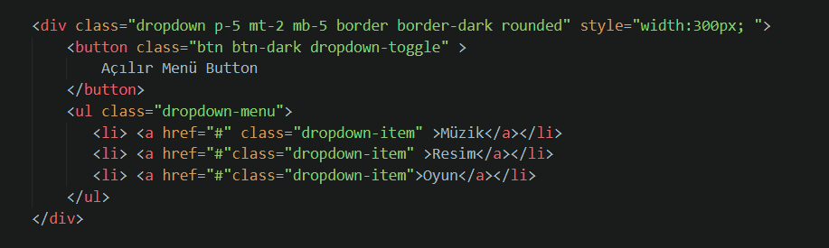
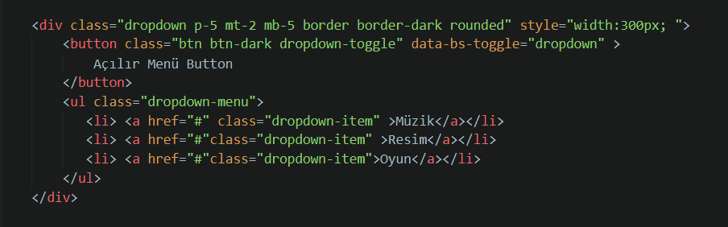
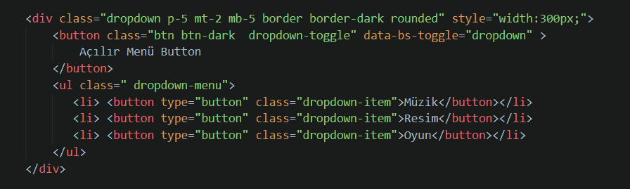
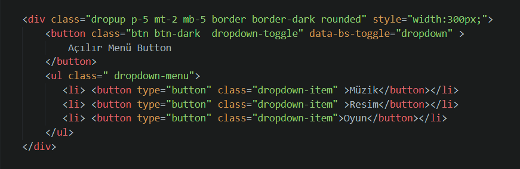
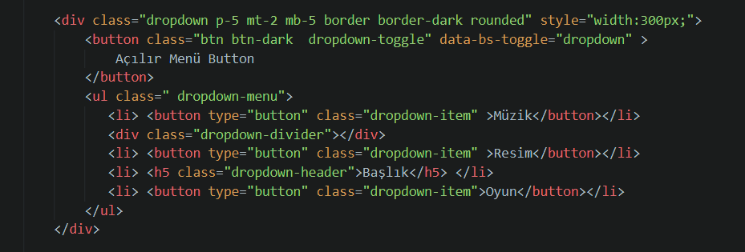
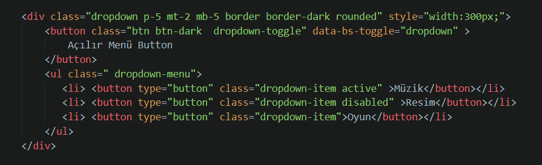
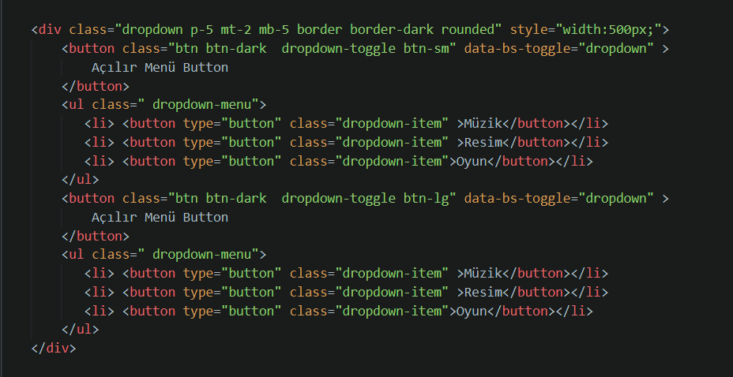

Dropdown, açılır menü demektir. Basit bir açılır menü yapalım.
İlk olarak bir div etiketi açmalıyız ve dropdown adında classı olmalı. Div içinde bir buton olmalı ve butona tıklayınca menü açılmasını sağlamalıyız. Butonun bir classı olmalı ve butonun tipini nasıl oluşturmak isterseniz (hangi renk kodu vb. ) buraya yazılmalı. Butonun yanında ok işaretinin olması için dropdown-toggle yazılır. Butona tıklayınca açılan menü için ul etiketi açılır, sınıf oluşturur, dropdow-menu yazarız. Daha sonra li elemanı tanımlayıp a etiketi koyarız. A etiketine vericeğimiz class ise dropdown-item olucak.
Butona tıkladığımız zaman menünün açılır olması gerekiyor dolayısıyla burada javascript kullanmamız gerekir. Onun yerine bunları data ile kullanılabilir. Bunu butonun içine data-bs-toggle yazarak yapabiliriz.
Eğer link olarak değilde buton olarak menü yapmak istiyorsanız a etiketi yerine button yazılır ve tipi belirtilir.
Açılır menünün bazı özeliklerine bakarsak ;
Butonların menülerinin açılma yönlerini de değiştirebiliriz. Bunun için en dıştaki div sınıfına dropup(yukarı), dropleft(sol), dropright(sağ) yazabiliriz.
Herhangi bir menüden sonra ayraç veya başlık koyulabilir.Ayraç için li'lerin arasına div classı açıp dropdown-divider yazılabilir. Başlık için ise yine aynı yere li etiketi açıp içine başlık etiketi (h1,h2,h3,h4,h5,h6) koyulur ve bu etikete vericeğimiz class dropdown header olur.
Menüdeki elemanlar aktif veya pasif olarak ayarlanabilir. Hangi elemanı aktif etmek istiyorsam button veya a etiketi içindeki classa active, pasif içinse disabled yazılır.
Bunların dışında yaptığımız butonların boyutlarını değiştirmek istersek buton etiketinde oluşturduğuz sınıfa girip btn-sm veya btn-lg yazabiliriz.
